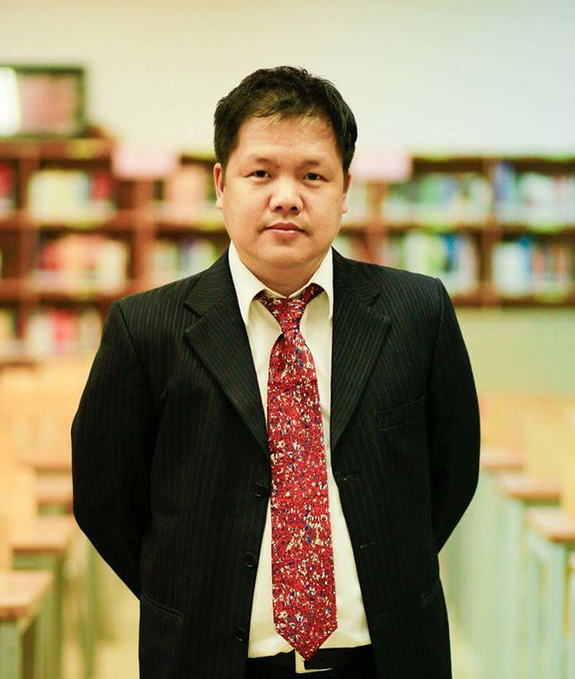

Thông điệp từ Hiệu trưởng
Chúng ta đã bước sang một kỷ nguyên mới, kỷ nguyên của những giải pháp thông minh. Những thiết bị và giải pháp thông minh ngày nay đã góp phần cho chúng ta một cuộc sống tiện nghi và đầy đủ hơn. Tuy nhiên, bên cạnh những lợi ích đó chúng ta cũng thấy những thay đổi của cuộc sống đòi hỏi chúng ta cần phải có những giải pháp thông minh hơn cho chính mình. Khi mà những nghề nhiệp, phương thức làm việc cũ đang dần bị thay đổi thì nền giáo dục cho thế hệ trẻ cũng cần được thay đổi. Nền giáo dục đó cần cung cấp được những kiến thức và kỹ năng hoàn toàn khác để người học nắm được cơ hội mới do kỷ nguyên mới mang lại.
Tại Trường Đại học FPT, chúng tôi luôn ý thức được sự cần thiết của việc đổi mới liên tục và tiếp cận với những giải pháp giáo dục thông minh. Những giải pháp đó hướng tới việc cung cấp cho người học những hệ kiến thức, kỹ năng phù hợp và trở thành những người tiên phong trong kỷ nguyên thông minh.Cùng một thời gian học tập, nhưng với những giải pháp công nghệ giảng dạy và học tập tiên tiến, người học sẽ được trải nghiệm thực tiễn cao nhất và tiếp cận vớinhững khái niệm, kiến thức, kỹ năng tiên tiến cập nhật ở mức toàn cầu.
Chính vì vậy, khi hoàn thành khóa học tại Trường Đại học FPT, người học hoàn toàn tự tin đáp ứng được nhu cầu việc làm toàn cầu và có quyền lựa chọn những công việc trong những môi trường làm việc tốt nhất. Mục tiêu đào tạo của trường là giúp các bạn trẻ trưởng thành và vững vàng sự nghiệp tương lai. Vì vậy, nhiều bạn trẻ đã thành đạt ở độ tuổi rất trẻ khi khởi nghiệp thành công, làm việc tại các doanh nghiệp lớn hay tại các quốc gia khác như Hoa Kỳ, Nhật, Úc hay Singapore.
Chúng tôi mong muốn được chia sẻ bí quyết về một nền giáo dục thông minh và toàn cầu hóa cho tất cả mọi người. Mục tiêu cao nhất của chúng tôi là mở mang bờ cõi trí tuệ Việt Nam, để Trí tuệ Việt Nam có thể cạnh tranh một cách bình đẳng với thế giới. Chúng ta hãy cùng nhau chung tay tham gia sự nghiệp này với Trường Đại học FPT.
Hiệu Trưởng Đại học FPT